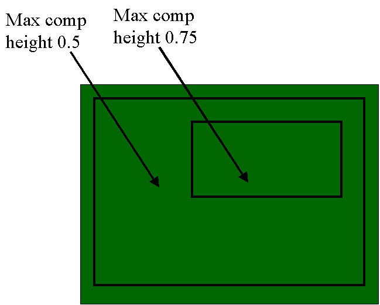
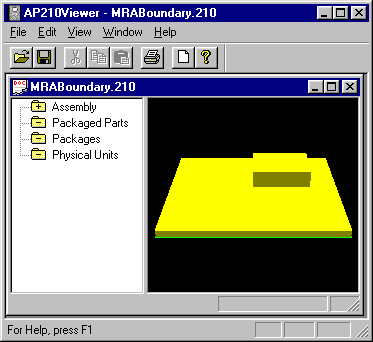

Filename:
ModifiedMRABoundary.210
Author:
Mike Keenan
Title:
Mounting Restriction Area Boundary
Design Source:
MRABoundary.210 created using
EMPilot IDF translator from MRABoundary.brd.
It contains three placement restriction areas. One outer and two inner,
one of the inner areas will be used for the shape_representation
for the outer MRA’s interior boundary.
Source Schema Date:
Mon Sep 4 18:51:43 EDT 2000
Validation Schema Date:
Mon Sep 4 18:51:43 EDT 2000
Conformance Class:
Recommended Practice Reference:
Component Placement Restriction Assignment (PDF) updated: June 20, 2000
Translator:
IDF to AP210 Translator 11/13/00
PostProcessing:
Manual to add the cutout to the outer mounting_restriction_area.
The differences are in ModifiedMRABoundaryDiff.txt.
Test Purpose:
Test a mounting_restriction_area with both an external and internal boundary.
Applicable Rules Clauses:
SEDS (Step Enhancement and Descripency System):
SEDS 27
KEYWORDS: connection_zone, planar_projected_shape
This approved SEDS calls out an approach that differs from the
on taken here. Therefore the solution presented here needs
to be reworked.
Description:

A board with two nested component height restriction areas. The outer one restricts the component height to 0.75 inches and the inner to 0.5 inches.
Supporting Graphic:

Figure 1: Primary Surface View
Testing History: